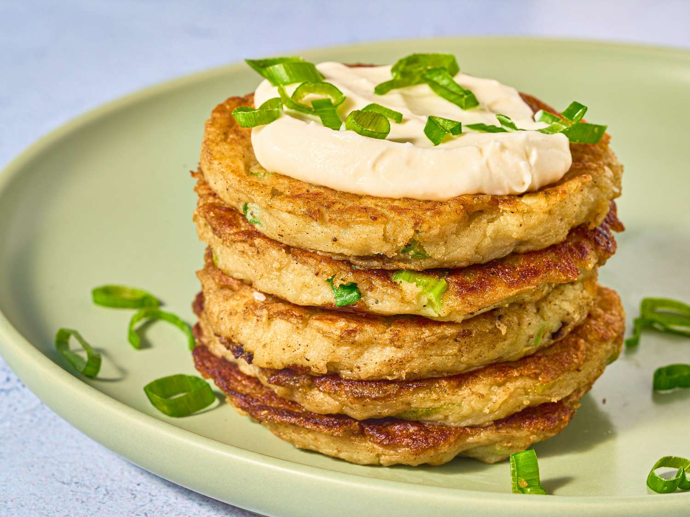
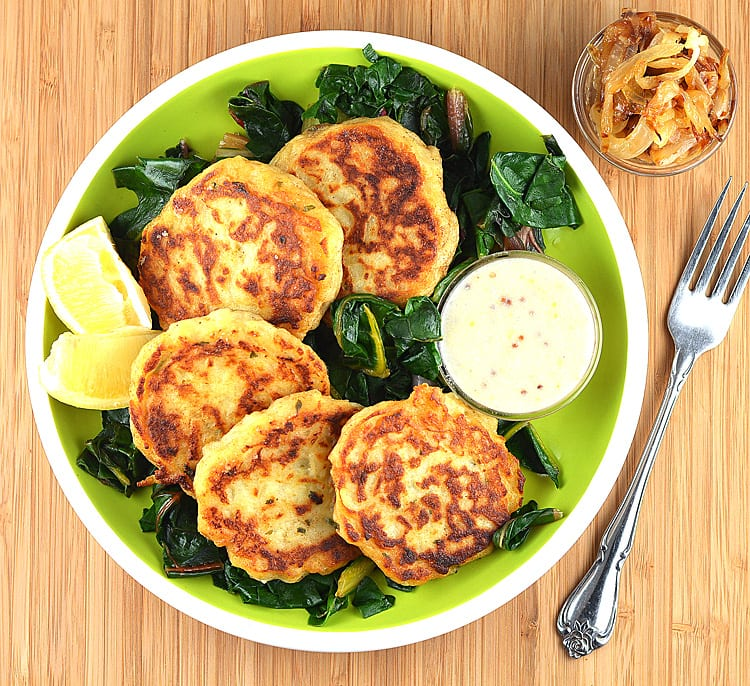
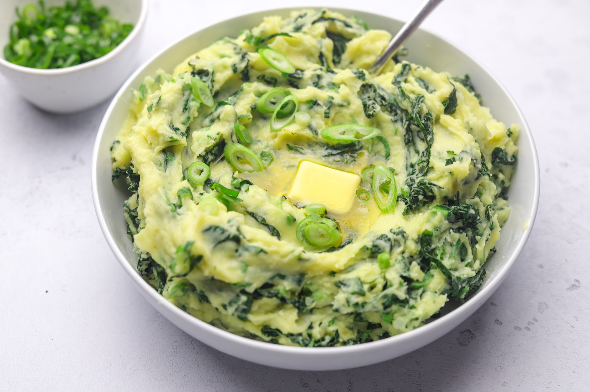
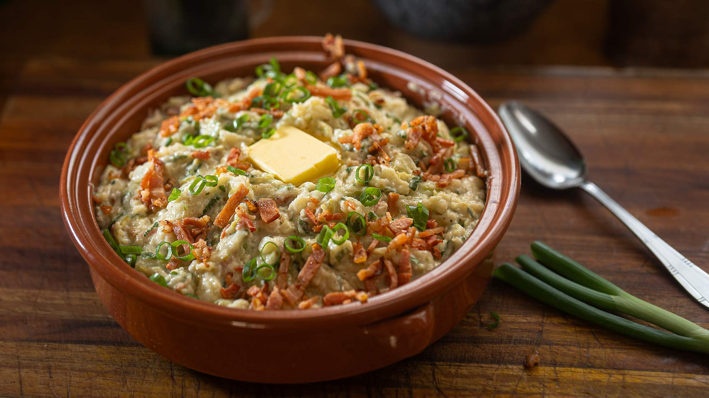
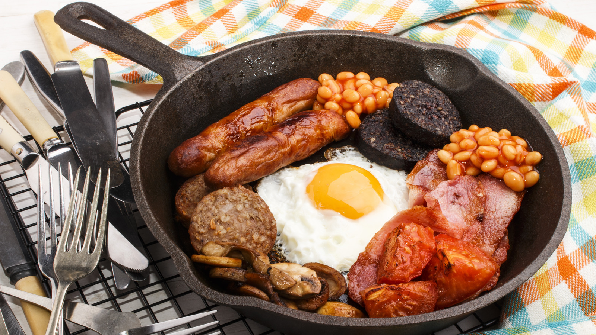
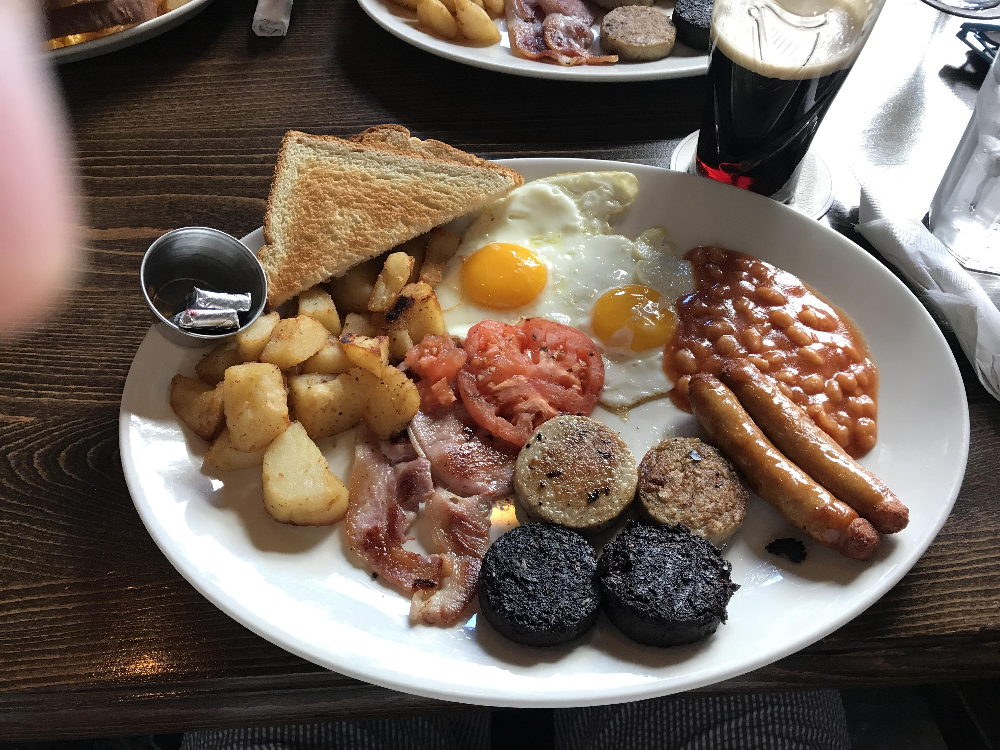
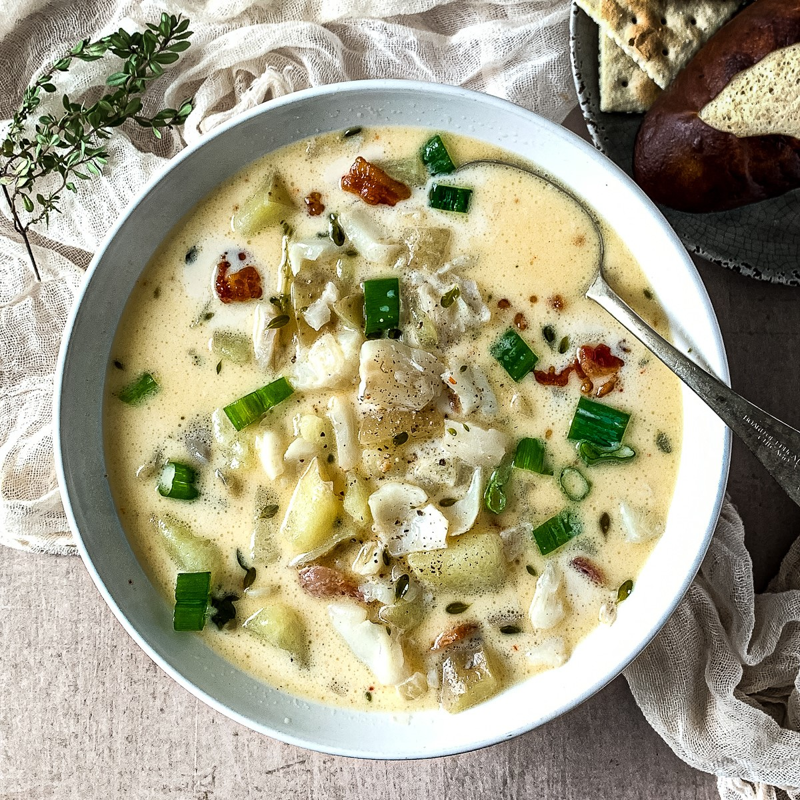

Irish Stew isn’t just a meal — it’s a comforting taste of Ireland. Tender lamb or mutton simmers slowly with potatoes, carrots, and
onions, creating a hearty, flavorful broth that warms both body and soul. Simple, rustic, and deeply satisfying, it’s traditionally
enjoyed in cozy pubs and family kitchens across Ireland. Every bite tells a story of local ingredients, generations of care, and the
timeless charm of Irish culinary tradition — a true taste of Ireland.
Boxty


Boxty isn’t just a potato pancake — it’s a taste of Irish heritage. Made from a blend of grated and mashed potatoes, lightly fried to
golden perfection, it’s soft, crispy, and utterly comforting. Traditionally enjoyed with butter, eggs, or savory fillings, Boxty
brings families together over hearty breakfasts and festive meals. Every bite reflects local ingredients, generations of care, and
the timeless charm of Irish home cooking — a true taste of Ireland.
Colcannon


Colcannon isn’t just mashed potatoes — it’s a cozy taste of Ireland. Creamy potatoes are blended with buttery cabbage or kale,
creating a comforting, hearty dish perfect for family meals and festive occasions. Simple, rustic, and full of flavor, it’s
traditionally enjoyed with a pat of butter melting on top. Every bite tells a story of local ingredients, generations of care,
and the timeless charm of Irish home cooking — a true taste of Ireland.
Soda Bread
Soda Bread isn’t just bread — it’s a staple of Irish tradition. Made with simple ingredients and leavened with baking soda instead
of yeast, it’s dense, hearty, and full of character. Traditionally enjoyed fresh from the oven with butter, cheese, or stew, it brings
warmth and comfort to every meal. Every slice tells a story of local grains, generations of care, and the timeless simplicity of Irish
home baking — a true taste of Ireland.
Black & White Pudding


Black & White Pudding aren’t just breakfast staples — they’re a taste of Irish tradition. Made from a blend of oats, barley, and
spices, sometimes enriched with blood for black pudding or simply oatmeal for white, these savory sausages are pan-fried to a golden
crisp. Traditionally enjoyed as part of a hearty Irish breakfast, they bring warmth, flavor, and a touch of history to the table.
Every bite reflects local ingredients, generations of care, and the timeless charm of Irish culinary heritage — a true taste of
Ireland.
Seafood Chowder

Seafood Chowder isn’t just a soup — it’s a taste of Ireland’s coasts. Fresh fish, shellfish, and sometimes smoked salmon swim in a
creamy, flavorful broth with potatoes and aromatic herbs. Rich, comforting, and satisfying, it’s traditionally enjoyed in seaside
towns and cozy homes alike. Every spoonful captures the essence of local ingredients, centuries of culinary care, and the timeless
charm of Ireland’s maritime heritage — a true taste of the Emerald Isle.